SmoothlyBrokenPowerLaw1D¶
-
class
astropy.modeling.powerlaws.SmoothlyBrokenPowerLaw1D(amplitude=1, x_break=1, alpha_1=-2, alpha_2=2, delta=1, **kwargs)[source] [edit on github]¶ Bases:
astropy.modeling.Fittable1DModelOne dimensional smoothly broken power law model.
Parameters: amplitude : float
Model amplitude at the break point.
x_break : float
Break point.
alpha_1 : float
Power law index for
x << x_break.alpha_2 : float
Power law index for
x >> x_break.delta : float
Smoothness parameter.
See also
Notes
Model formula (with
 for
for amplitude, 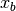 forx_break, 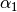 foralpha_1, for
for alpha_2and 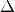 fordelta):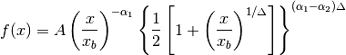
The change of slope occurs between the values 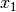 and
 such that:
such that: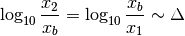
At values 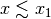 and
 the
model is approximately a simple power law with index
and respectively. The two
power laws are smoothly joined at values 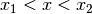,
hence the parameter sets the “smoothness” of the
slope change.
the
model is approximately a simple power law with index
and respectively. The two
power laws are smoothly joined at values 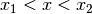,
hence the parameter sets the “smoothness” of the
slope change.The
deltaparameter is bounded to values greater than 1e-3 (corresponding to 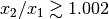) to avoid overflow errors.The
amplitudeparameter is bounded to positive values since this model is typically used to represent positive quantities.Examples
import numpy as np import matplotlib.pyplot as plt from astropy.modeling import models x = np.logspace(0.7, 2.3, 500) f = models.SmoothlyBrokenPowerLaw1D(amplitude=1, x_break=20, alpha_1=-2, alpha_2=2) plt.figure() plt.title("amplitude=1, x_break=20, alpha_1=-2, alpha_2=2") f.delta = 0.5 plt.loglog(x, f(x), '--', label='delta=0.5') f.delta = 0.3 plt.loglog(x, f(x), '-.', label='delta=0.3') f.delta = 0.1 plt.loglog(x, f(x), label='delta=0.1') plt.axis([x.min(), x.max(), 0.1, 1.1]) plt.legend(loc='lower center') plt.grid(True) plt.show()
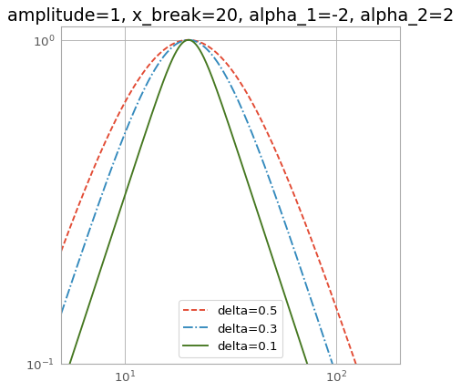Attributes Summary
alpha_1alpha_2amplitudedeltainput_unitsparam_namesx_breakMethods Summary
evaluate(x, amplitude, x_break, alpha_1, ...)One dimensional smoothly broken power law model function fit_deriv(x, amplitude, x_break, alpha_1, ...)One dimensional smoothly broken power law derivative with respect Attributes Documentation
-
alpha_1¶
-
alpha_2¶
-
amplitude¶
-
delta¶
-
input_units¶
-
param_names= ('amplitude', 'x_break', 'alpha_1', 'alpha_2', 'delta')¶
-
x_break¶
Methods Documentation
-
static
evaluate(x, amplitude, x_break, alpha_1, alpha_2, delta)[source] [edit on github]¶ One dimensional smoothly broken power law model function
-
static
fit_deriv(x, amplitude, x_break, alpha_1, alpha_2, delta)[source] [edit on github]¶ One dimensional smoothly broken power law derivative with respect to parameters
-
{kind=link}
{kind=link}